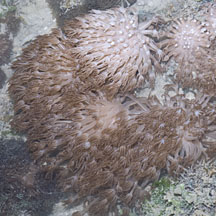
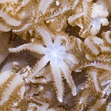
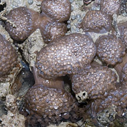
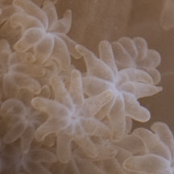
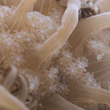
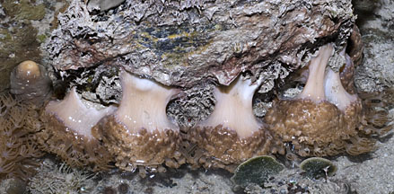
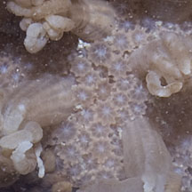
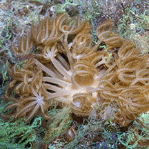

|
|
| soft corals text index | photo index |
| Phylum Cnidaria > Class Anthozoa > Subclass Alcyonaria/Octocorallia |
| Xenia
soft coral Heteroxenia sp.* Family Xeniidae updated Nov 2019 Where seen? This colony with large pinkish polyps is seen in coral rubble on some of our Southern shores. Features: Colony about 4-8cm, usually a thick common tissue that is club-shaped; with a short columnar base and a dome-shaped top. Two kinds of polyps. Tall fleshy polyps (autozooids) 2cm in diameter, on stalks about 3-5cm long. The eight tentacles are broad, long with many short thin side branches (pinnules) arranged in 1 to 5 rows along both edges of each tentacle. Side branches brownish, oral disk and main tentacles pinkish. The polyps emerge from a pinkish common membrane which is densely dotted with smaller star-shaped polyps (siphonozooids). The polyps may contract into tiny lumps on the common tissue but does not contract completely like those of the Leathery soft corals (Family Alcyoniidae). According to Fabricius, Heteroxenia species have small siphonozooids among non retractable large autozooids, and may be found in shallow water. Xenia species only have one kind of polyp and are usually absent in murky or dirty water. When we see them at low tide during the day, only a few polyps may pulse weakly, while others are contracted or are not pulsing. A study found that the polyps pulsate to improve photosynthesis. Sometimes mistaken for the more common Broad feathery soft corals which are usually blue and don't pulse. |
 Pulau Semakau, Aug 11 |
 Pulau Semakau, Aug 11 |
|
 Contracted polyps look like lumps. Terumbu Bemban, Apr 12 |
 Star-shaped siphonozooids. Terumbu Bemban, Apr 12 |
 Terumbu Bemban, Apr 12 |
|
 Pulau Semakau, Oct 11 |
 Small star-shaped siphonozooids. Pulau Semakau, Oct 11 |
|
*ID needs to be
confirmed. Species are difficult to positively identify without closer
examination.
On this website, the animals are grouped by external features for convenience
of display.
| Xenia soft corals on Singapore shores |
On wildsingapore
flickr
|
| Other sightings on Singapore shores |
 Pulau Semakau (North), Apr 16 |
|
Links
References
|